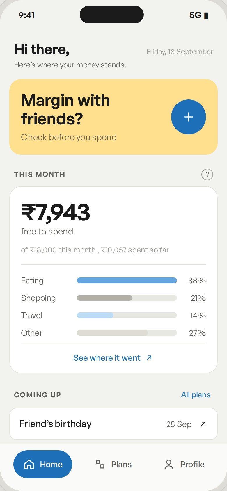
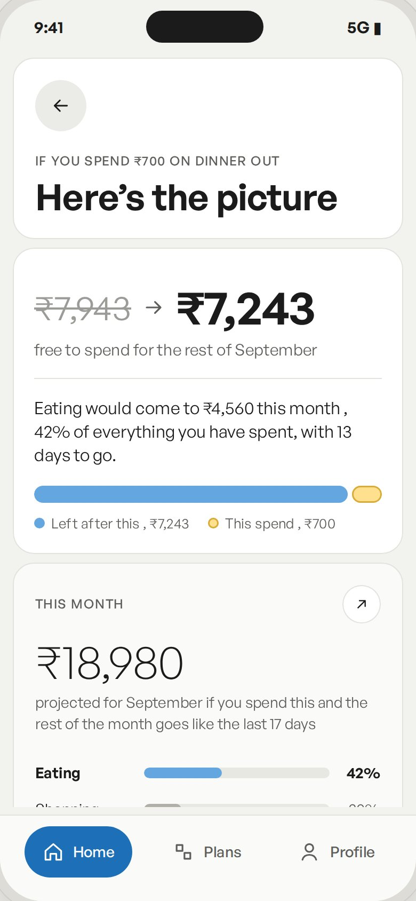
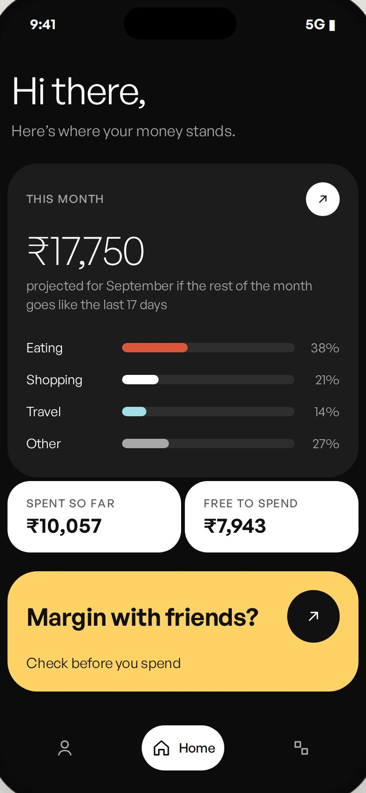
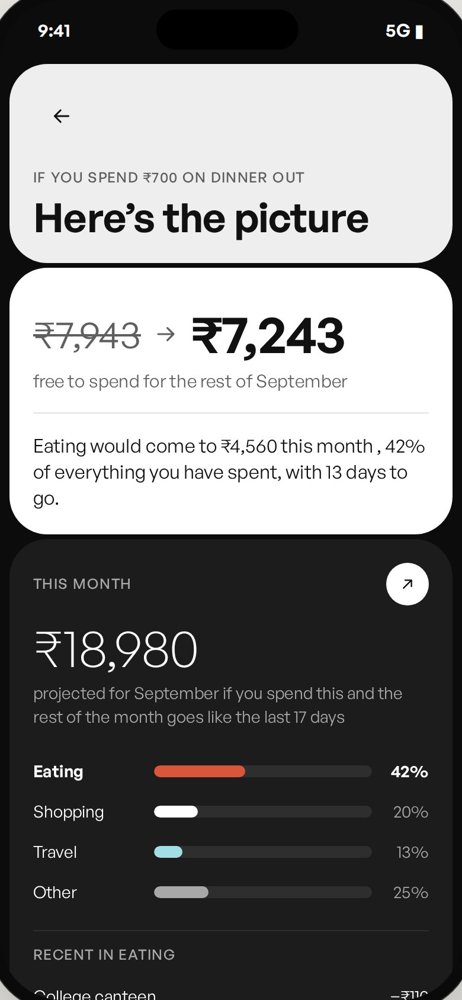

Margin
Testing what happens between knowing and spending


Can making financial consequences visible at the moment of spending make spending decisions more conscious?
Confidential. Participants are shown by code only, P01 to P11.Screens: Margin prototype V2, repository capture, sample names replaced.
The original problem space was student spending.
The first instinct was to help students understand where their money goes, track expenses, identify patterns and manage their available money.
The behavioural research showed that students were already using many forms of financial reasoning.
The problem was not simply that financial information was missing. The problem was that the information did not always become part of the decision.
That a future expense was coming
and still spend differently today.
Their balance
and still not calculate the consequence of a purchase.
They were spending frequently
and still decide that the experience was worth it.
This shifted the problem from tracking to consideration.
How do we help students track their money?
How do we make relevant financial information part of the spending decision?
Student spending was shaped by multiple interacting conditions.
| Behavioural condition | What it affected |
|---|---|
| Social context | Whether a purchase happened at all |
| Future commitments | Whether current spending felt affordable |
| Convenience | Whether a cheaper alternative was considered |
| Time pressure | Whether financial calculation happened |
| Perceived value | Whether an expensive purchase felt justified |
| Mental budgeting | How money was allocated across time |
| Emotional state | How much consideration happened before spending |
| Accumulation | Whether repeated small purchases became salient |
| Responsibility | Whether money was reserved for future or unexpected needs |
The research therefore suggested that spending decisions were not purely financial decisions.
But the active spending situation can be dominated by other information.
Bring personally relevant financial context into the room at the moment when the decision is still open.
How do we help students understand their spending?
How do we help students become financially conscious of each spending decision?
Knowing what is happening to your money.
Recognising how that information relates to the decision you are making.
The product does not need to make the decision for the user.
The product needs to make the consequence easier to see and consider.
Can making financial consequences visible at the moment of spending make spending decisions more conscious?
Research questionWhen is financial information most relevant?
Is the consequence of a proposed expense more useful than historical spending information?
How much work does the user have to do to understand their financial position?
What happens when social or emotional context is stronger than financial context?
Do users want information, prompts and flags rather than enforced restriction?
Does awareness carry into later decisions?
Before or during a discretionary spending decision, the participant notices relevant financial context, understands the likely consequence of the proposed expense, and uses that information as one input into the decision.
Buy
Buy less
Delay
Substitute
Do not buy
Buy anyway, with awareness of the consequence
“Spend less”
Financial information enters the participant's reasoning before the decision closes.
A participant who sees the consequence and still purchases has not necessarily failed the intervention.
This still demonstrates that the consequence entered the decision.
Showing financial impact will create consideration
If information is seen but ignored, the intervention fails
Users can understand the information quickly
A decision may close before the calculation is complete
Contextual information is more useful than generic totals
If historical dashboards are enough, the new interaction adds little
The intervention can influence reasoning without controlling the user
Enforcement would change the role of the product
The effect can carry into later decisions
One successful interaction is not behaviour change
Users will engage at the spending moment
A useful feature that requires opening another app may not be used
The information may be useful in theory but unavailable at the exact moment when the decision happens.
Participants observed and reflected on their own spending for six days.
The purpose was to understand what happened when spending became more visible without relying entirely on the interface to produce awareness.
Each day: spend, record, reflect. Day-level records are in Appendix 06.
One six-day observation showed a change in attention toward small, repeated purchases.
The participant had previously purchased snacks from vending machines or nearby stores at least twice a day and regularly used autos.
A small transaction can become psychologically significant when the pattern becomes visible.
The six-day observation suggested that awareness can come from simple visibility.
The participant noticed something that was already happening.
Knowledge
Knowing something happens.
Salience
Seeing it while it matters.
Can a product create the same kind of salience at a spending moment without making the user manually calculate everything?
A transaction records an amount. A decision contains much more.
₹ amount
time, merchant
What financial information was actually active when the decision happened?
P01's spending decisions were strongly influenced by the immediate social environment.
A purchase could happen because the participant was already with friends or because the group was moving toward a shared activity.
Financial calculation
Social participation
A spending intervention may have to compete with a decision that has already been socially established.
The product should surface financial context without treating social spending as irrational or wrong.
The participant's reflection did not frame every spontaneous purchase as a mistake. The logic was closer to:
Unplanned
Socially triggered
Still perceived as a good decision
Unplanned spending and bad spending are not equivalent.
The prototype should not measure success only by whether spending decreases.
It should also measure whether the participant consciously evaluates the trade-off.
P02's spending decisions involved strong post-purchase evaluation. The recurring question was: was it worth it?
The person did not always calculate the financial consequence before spending.
The financial evaluation often happened afterwards.
Food, leisure and experiences were frequently interpreted through their perceived value rather than price alone.
For this participant, consciousness can happen as an evaluation after the purchase.
Post-purchase reflection can influence the meaning of the next purchase.
A high-cost purchase does not automatically feel excessive.
A lower-cost purchase does not automatically feel acceptable.
₹1,500 spent
does not explain how the participant evaluates the decision.
₹1,500 spent + high perceived value
produces a very different behavioural interpretation.
Financial decisions are partly value decisions.
Can financial consequence be shown without overriding the user's own value judgement?
P03 already used a mental allocation system. Money was mentally divided across:
Today
Tomorrow
Future needs
Unexpected costs
Future goals
When spending increased in one place, the participant considered reducing spending somewhere else.
Some participants already calculate financial consequence mentally.
Spend
Do not spend
Instead, the participant used substitutions.
Less expensive food
Walking instead of transport
Reducing another discretionary expense
Protecting a financial buffer
The participant was using spending decisions to preserve flexibility for future needs.
Financial consciousness can change where a person compromises rather than whether they compromise.
P04 had a future commitment planned for later in the week.
The participant knew the commitment existed and intended to keep earlier spending lower. Then an immediate situation occurred.
The future expense was not forgotten.
It was simply not active in the decision.
Known does not mean considered.
The participant could remember the future plan later.
The failure happened earlier.
The product should not assume that storing a future plan is enough.
The plan has to become relevant at the moment when current spending could affect it.
Future plan
should become visible as
Current consequence
when the user is making a relevant purchase.
P05 could access financial information through existing payment infrastructure.
The issue was bringing the information together quickly enough.
The problem is not necessarily lack of financial awareness.
The problem can be calculation effort.
A financially useful tool can still fail if understanding it takes longer than the decision.
The prototype opportunity becomes:
The example above is an interface example, not participant data.
The product should perform the calculation, not ask the user to perform it.
P06 showed that perceived value can override financial caution.
A discretionary purchase could remain attractive even when the monthly financial position was already tight.
Hey Clicky
Approx. ₹1,800 / $20
Fun
Novelty
Usefulness
Personal interest
The participant was not evaluating the purchase only as a financial cost.
The purchase had another form of value.
Financial consequence is one input into a broader value judgement.
Purchase
No purchase
Automatic purchase
Considered purchase
A conscious decision can produce the same action as an unconscious decision.
P07 explored the prototype as a financial overview. The participant understood:
But an important question remained unresolved.

V1 home, prototype-v1.html. Sample names replaced.
The interface communicated information.
The purpose of the information was less clear.

V1 result after a proposed spend, prototype-v1.html.
What happened?
What happens if I do this?
The prototype became more useful when it moved from description to consequence.
The participant was open to intervention but did not want the system to take over the decision.
The system should increase consideration without replacing judgement.
P08 already used a payment app as a source of truth. The payment app provided:
Transaction history
Money in and out
Payment descriptions
Group and split information
A separate product does not create value simply by recreating transaction history.
Future commitments become useful when they create a concrete spending boundary.
P08 described the difference between one small expense and a large accumulated amount.
Individual transactions can remain psychologically small.
Aggregation changes salience.
A pattern has more value when it leads to an actionable interpretation.
P09 noticed repeated low-value spending more strongly once transactions were recorded together.
The meaningful change was in salience.
The participant did not suddenly discover the existence of snacks or autos.
They discovered the frequency.
Visibility of repetition can change the threshold at which a small expense feels significant.
V2 result with the progress bar, prototype-v2.html.
The participant's strongest criticism was not simply visual. The participant was asking:
Where does this product enter my behaviour?
A product can have understandable features and still lack a clear use situation.
Information should appear before the decision closes.
The user should not reconstruct their financial position.
Manual logging should not become the barrier to useful feedback.
Timing
Known information can become irrelevant if it is not active at the decision moment.
Cognitive effort
Financial calculation can be too slow relative to the speed of the decision.
Future commitments
Future expenses become more useful when connected to present spending.
Social context
Spending can be socially initiated rather than financially initiated.
Perceived value
Users may knowingly spend because the experience or utility is worth it.
Accumulation
Repeated small spending becomes more salient when seen together.
Agency
Users are more comfortable with information and prompts than with enforced decisions.
Page 37 maps each participant to these patterns.
| Participant | Social context | Future commitments | Calculation effort | Value judgement | Accumulation | Automation | Agency |
|---|---|---|---|---|---|---|---|
| P01 | |||||||
| P02 | |||||||
| P03 | |||||||
| P04 | |||||||
| P05 | |||||||
| P06 | |||||||
| P07 | |||||||
| P08 | |||||||
| P09 | |||||||
| P10 | |||||||
| P11 | Verify | Verify | Verify | Verify | Verify | Verify | Verify |
| count | 4 | 6 | 3 | 3 | 2 | 4 | 9 |
The count row totals “evidence present” marks per column across P01 to P10. P11 is not counted until its source record is verified.
| Finding | Evidence, P01 to P10 |
|---|---|
| Future plans can be known but not active | 01020304050607080910 |
| Manual capture creates friction | 01020304050607080910 |
| Potential spending is more decision-oriented than generic history | 01020304050607080910 |
| Social situations can dominate financial reasoning | 01020304050607080910 |
| Value can justify a purchase | 01020304050607080910 |
| Aggregation can increase salience | 01020304050607080910 |
| Users want autonomy | 01020304050607080910 |
| The moment of use is unclear | 01020304050607080910 |
| Automation increases the likelihood of continued use | 01020304050607080910 |
The strongest recurring need was not more financial information. It was more relevant financial information at the right moment.
Research became more useful when contradictory behaviours were retained instead of averaged away.
There is no single “financially conscious” user behaviour.
The intervention has to support consideration rather than assume the correct outcome.
Transaction
What was spent?
Decision
The prototype becomes valuable when it helps the user understand the consequence of a decision, not simply the existence of a transaction.
| Break | Evidence | Type |
|---|---|---|
| Use situation unclear | P07P10 | TimingExperience |
| Potential-spend feature not dominant enough | P07 | Experience |
| Amount already spent unclear | P07 | AbilityExperience |
| Amount remaining unclear | P07P10 | Ability |
| Actual vs estimated spending unclear | P10 | Experience |
| Manual transaction entry requires navigation | P07P08P10 | Ability |
| Progress bar implies the wrong goal | P10 | Experience |
| Prototype feels congested | P07 | Experience |
| New Plan interaction failed during session | P07 | AbilityPrototype issue |
| Updating transactions was unclear | P07 | Ability |
| Categorisation can be ambiguous | P10 | Ability |
| Users need a walkthrough | P07 | Experience |
Use case
The interface was organised around features.
The user was looking for a situation.
Manual entry
The behaviour requires financial information to be available.
Manual capture can become a separate task.
Progress metaphor
The representation suggested that filling the bar was the objective.
Later friction
Later logging loses contextual information.
Potential spending
The strongest feature was not sufficiently central to the overall interaction.
How much have I spent?
What happens if I spend this?
Would you still like to spend ₹700?
The interface surfaces the consequence.
The user decides what the consequence means.
| Evidence | Interpretation | Decision | |
|---|---|---|---|
| P04 | P04 knew a future dinner but did not consider it | Future information can disappear from the active decision | Show relevant upcoming commitments alongside proposed spending |
| P05 | P05 found calculation effortful | Calculation competes with the speed of decision | Calculate projected remaining amount |
| P07 | P07 highlighted potential spending | Consequence is more useful than generic history | Make potential spending central |
| P07 | P07 wanted a flag, not a command | User wants agency | Use reflective prompts rather than enforcement |
| P08 | P08 already tracks through payment app | Transaction history is duplicated | Prioritise context and consequence |
| P08 | P08 uses self-set limits | Users can create their own boundaries | Keep limits user-defined |
| P09 | P09 noticed accumulation | Frequency can become salient | Show cumulative patterns where meaningful |
| P10 | P10 questioned the use situation | The feature needs a clear behavioural entry point | Frame interaction around “about to spend” |
| P10 | P10 said later logging is harder | Context decays after spending | Move capture and relevance closer to the event |
| P10 | P10 preferred seamless interaction | Opening another app is friction | Explore automation or embedded interaction |
How do we help students track their money?
How do we make financial consequences visible while the spending decision is still open?
Timely
Financial information appears before the decision closes.
Contextual
The information relates to the current proposed expense.
Low-effort
The user should not have to reconstruct their financial position manually.
Consequence-oriented
The system shows what changes if the expense happens.
Non-judgemental
The product does not classify a decision as good or bad.
Agency-preserving
The system surfaces information and questions; the user decides.
Does making the financial consequence of a proposed expense immediately visible increase financial consideration before commitment?
Research questionFinancial consideration
Relevant decisions where financial context was noticed and incorporated into reasoning
Total relevant decisions observed
| Secondary measure | What is recorded |
|---|---|
| Notice | Did the participant look? |
| Understanding | Could they explain the consequence? |
| Connection | Did they relate it to the purchase? |
| Consideration | Did they mention a trade-off? |
| Decision | Changed / maintained / delayed |
| Effort | Steps required |
| Time | Time to understand |
| Independence | Needed help / unaided |
| Repeat | Happened again without prompting |
The goal is not less spending.
The goal is more conscious spending.
“What would you do next?”
Use only when the participant is stuck.
| Participant | Round | Date | Method | Current behaviour | Task | What they did |
|---|---|---|---|---|---|---|
| P01 | 1 | Verify | Baseline | Socially influenced spending | Verify | Verify |
| P02 | 1 | Verify | Baseline | Post-purchase value evaluation | Verify | Verify |
| P03 | 1 | Verify | Baseline | Mental allocation | Verify | Verify |
| P04 | 1 | Verify | Baseline | Future commitment not active | Food decision | Ordered |
| P05 | 1 | Verify | Baseline | Calculation effort | Verify | Verify |
| P06 | 1 | Verify | Baseline | Value-led purchase | Verify | Verify |
| P07 | 1 | Verify | Prototype | Prototype decision support | Spending scenario | Explored prototype |
| P08 | 1 | Verify | Prototype | Existing payment tracking | Prototype | Evaluated features |
| P09 | 1 | Verify | Six-day observation | Repeated small spending | Daily observation | Reduced some snack/auto use |
| P10 | 1 | Verify | V2 prototype | Decision moment unclear | Spending scenario | Questioned situation |
| P11 | 1 | Verify | Verify | Verify | Verify | Verify |
| Participant | What they said | Stage | Outcome | Time | Attempts | Guardrail |
|---|---|---|---|---|---|---|
| P01 | Quote | Verify | Verify | Verify | Verify | Verify |
| P02 | Quote | Verify | Verify | Verify | Verify | Verify |
| P03 | Quote | Verify | Verify | Verify | Verify | Verify |
| P04 | “I knew I had the dinner on Friday.” | Timing | Verify | Verify | Verify | Verify |
| P05 | “By the time I've checked everything, the decision is already happening.” | Ability / Timing | Verify | Verify | Verify | Verify |
| P06 | Quote | Evaluation | Verify | Verify | Verify | Verify |
| P07 | “How would this help me exactly? I don't get it.” | Timing / Experience | Verify | Verify | Verify | Verify |
| P08 | “I use the payment app history as the source of truth.” | Ability | Verify | Verify | Verify | Verify |
| P09 | Quote | Awareness | Verify | Verify | Verify | Verify |
| P10 | “When exactly am I using this app? What is the situation?” | Timing | Verify | Verify | Verify | Verify |
| P11 | Verify | Verify | Verify | Verify | Verify | Verify |
| What broke | Sessions | CREATE stage | M / A / P | Severity | Design response |
|---|---|---|---|---|---|
| Use situation unclear | 2+ | Timing / Experience | A | BlockerDrag | Reframe around decision moment |
| Potential spending not prominent | 1+ | Experience | P / A | Drag | Make consequence central |
| Manual transaction entry | 3 | Ability | A | Drag | Explore automatic capture |
| Actual vs estimated unclear | 1 | Experience | A | Drag | Separate states visually |
| Progress bar implied goal | 1 | Experience | A | Drag | Remove progress metaphor |
| Updated amount unclear | 1 | Ability | A | Drag | Clarify remaining amount |
| Navigation congested | 1 | Experience | A | Drag | Separate major functions |
| New Plan interaction failure | 1 | Ability | A | Blocker | Fix prototype |
| Pattern information not actionable | 1+ | Evaluation | A | NoiseDrag | Attach pattern to action |
| User wants system to decide | 0 | No evidence; maintain agency |
The current design provides information but does not consistently place the relevant information inside the spending decision.
Move the financial consequence of a proposed expense into the decision surface.
Participants will understand more quickly what the proposed expense means for their remaining money and will be more likely to explicitly consider the trade-off.
Participants still:
Changed
Decision moved from original choice
Modified
Amount or alternative changed
Delayed
Decision postponed
Declined
Purchase abandoned
Maintained
Original decision retained
Conscious maintain
Original decision retained after explicit financial consideration
Maintained does not equal failed.
A maintained decision can still demonstrate consideration.
Time to complete: Verify
Attempts: Verify
Unaided: Verify
What cued the behaviour: Verify
Did it happen: Verify
What brought them to it: Verify
How known: Verify
Did it happen: Verify
What brought them to it: Verify
How known: Verify
Did it happen: Verify
What brought them to it: Verify
How known: Verify
Did it happen: Verify
What brought them to it: Verify
How known: Verify
Did it happen without prompting: Verify
Time taken: Verify
Compared with Day 1: Faster / Same / Slower
What cued it: Design / Participant's own reminder / Researcher presence / Other
P app prompt
W something in the environment
M participant's own thought or feeling
D did it
H half did it
N did not do it
G good
F flat
B bad
| Date | Time | Entry exactly as sent | Trigger | Action | Feeling |
|---|---|---|---|---|---|
| Verify | Verify | Verify | P / W / M | D / H / N | G / F / B |
| Verify | Verify | Verify | P / W / M | D / H / N | G / F / B |
| Verify | Verify | Verify | P / W / M | D / H / N | G / F / B |
| Verify | Verify | Verify | P / W / M | D / H / N | G / F / B |
| Verify | Verify | Verify | P / W / M | D / H / N | G / F / B |
| Verify | Verify | Verify | P / W / M | D / H / N | G / F / B |
| Verify | Verify | Verify | P / W / M | D / H / N | G / F / B |
| Verify | Verify | Verify | P / W / M | D / H / N | G / F / B |
| Verify | Verify | Verify | P / W / M | D / H / N | G / F / B |
| Verify | Verify | Verify | P / W / M | D / H / N | G / F / B |
| Verify | Verify | Verify | P / W / M | D / H / N | G / F / B |
| Verify | Verify | Verify | P / W / M | D / H / N | G / F / B |
Something the participant actually did.
Something the participant said.
An interpretation based on evidence.
Something the current research does not establish.
| Item | Status |
|---|---|
| P01 raw record | Verify |
| P02 raw record | Verify |
| P03 raw record | Verify |
| P04 raw record | Verify |
| P05 raw record | Verify |
| P06 raw record | Verify |
| P07 complete transcript | Available / verify |
| P08 complete transcript | Available / verify |
| P09 six-day record | Available / verify |
| P10 complete V2 transcript | Available / verify |
| P11 complete record | Verify |
| Round 1 counts | Verify from observation sheets |
| Round 2 counts | Verify from observation sheets |
| Exact dates | Verify |
| Exact task wording | Verify |
| Pass criteria | Verify |
| CREATE classification | Verify |
| M/A/P classification | Verify |
| Severity | Verify |
| Repeat-probe data | Verify |
| Loop-log data | Verify |
The testing kit requires the target action, CREATE stage, task, pass criteria and riskiest assumption to be set before testing; it then requires observable break roll-up, CREATE, M-A-P and severity tagging, one change, a pre-written prediction and falsifier, and a separate repeat-behaviour probe.